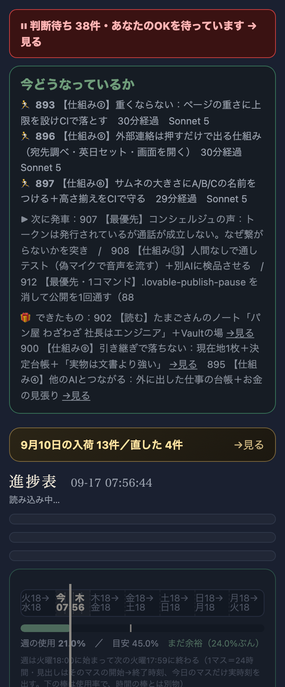
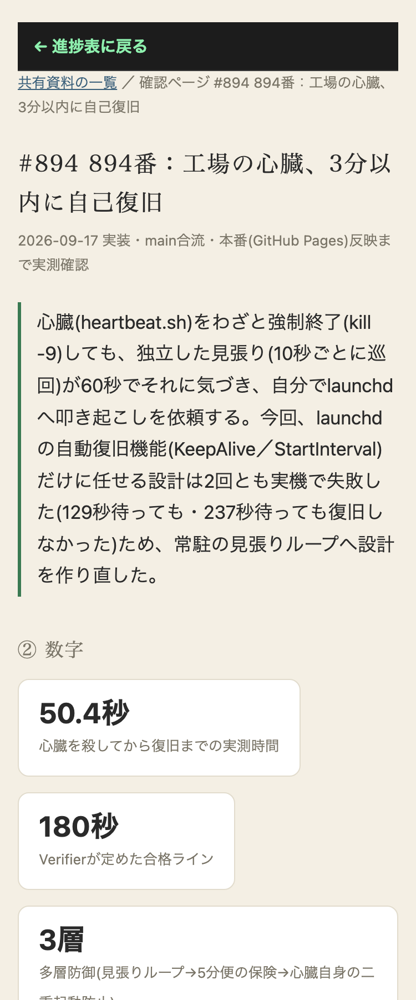

| 確認項目 | 結果 |
|---|---|
| 894番の確認ページを繰り返し検品 | 修正前3回に1回FAIL→修正後5回連続PASS |
| 896番の確認ページを繰り返し検品 | 修正前は本番ログでFAIL実測→修正後3回連続PASS |
| 本当に無反応なリンク／ボタンは今も検出できるか(逆テスト) | ローカルにdead link/working buttonを含むテストページを用意→dead linkは正しくFAIL検出を維持 |
| 892・894・896・917番のtouchCheckFailCountとfailReasons | 検品バグ由来の分を取り消し、訂正メモを追記(queue.json) |